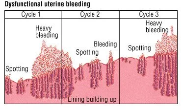
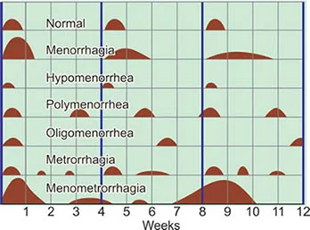

Expanded Nursing Uganda Explanation
Dysfunctional uterine bleeding should be understood beyond a short definition. Link the concept to patient history, focused assessment, common risks, nursing priorities, documentation and evaluation of outcomes.
01 DYSFUNCTIONAL UTERINE BLEEDING
It is characterized by irregular , prolonged , or heavy menstrual bleeding. Dysfunctional uterine bleeding also refers to abnormal bleeding resulting from hormonal changes rather than from trauma, inflammation, pregnancy or a tumour.
Although there is no apparent structural or organic cause, the term “dysfunctional” means that the bleeding originates from a dysfunction within the normal hormonal regulation of the menstrual cycle rather than a specific anatomical abnormality.
While these are not direct causes of DUB, they can influence or worsen the condition.
- Hormonal Dysfunction: Hormonal imbalances, particularly disruptions in oestrogen and progesterone levels, can interfere with the normal menstrual cycle. These imbalances may result from various factors, including stress, medical conditions, or natural hormonal fluctuations.
- Benign and Malignant Tumours : The presence of benign growths (such as uterine fibroids) or malignant tumours (like uterine or cervical cancer) can lead to abnormal bleeding patterns. Tumours affect the uterine structure, impacting the regularity of menstrual cycles.
- Use of Some Contraceptives : Certain contraceptives, especially those containing hormones, can influence menstrual patterns. Changes in contraceptive methods or formulations may contribute to dysfunctional bleeding in susceptible individuals.
- Coagulation Disorders: Conditions affecting blood clotting, such as thrombocytopenia or leukaemia, can lead to dysfunctional bleeding. Impaired coagulation mechanisms may result in irregular and excessive menstrual flow.
- Systemic Diseases – Ovarian Failure: Ovarian failure, characterized by the loss of normal ovarian function, can disrupt hormonal balance and menstrual regularity. Systemic diseases impacting ovarian function contribute to dysfunctional bleeding.
- Various Factors Influencing Hormonal Balance:
- Immature hypothalamus
- Changes in exercise patterns
- Impaired follicular stimulation
- Malnutrition
- Emotional viability/crises
- Temporary oestrogen withdrawal at ovulation
- Radiation and chemotherapy
- Lifestyle changes
02 Types of Dysfunctional Uterine Bleeding (DUB):
DUB may present in any of the following ways:
- Menorrhagia : Menorrhagia involves prolonged or excessive bleeding during regular menstruation.
- Metrorrhagia : Metrorrhagia refers to vaginal bleeding occurring between regular menstrual periods.
- Oligomenorrhea : Oligomenorrhea is characterized by a significantly reduced menstrual flow, often accompanied by irregular cycles.
- Polymenorrhea : Polymenorrhea manifests as frequent menstruation, occurring at intervals of less than three weeks.
- Menometrorrhagia : Menometrorrhagia involves excessive bleeding both during the usual menstrual time and at irregular intervals.
03 Signs and Symptoms of Dysfunctional Uterine Bleeding
- Irregular menstrual cycles : Menstrual periods may occur more frequently or infrequently than usual.
- Prolonged bleeding : Menstrual bleeding may last longer than the typical duration.
- Heavy menstrual bleeding : Excessive or abnormally heavy bleeding during menstrual periods.
- Intermenstrual bleeding : Bleeding that occurs between menstrual cycles.
- Fatigue or tiredness due to excessive blood loss.
- Anaemia symptoms : Weakness, lightheadedness, shortness of breath, or pale skin.
NOTE : A diagnosis of dysfunctional uterine bleeding is made only when all other possibilities of causes of bleeding have been excluded.
04 Investigations
Dysfunctional uterine bleeding is diagnosed based on patient history and physical examination and laboratory investigations.
- Complete blood count (CBC): Helps to detect anaemia
- HCG test: It is recommended to rule out pregnancy
- Thyroid stimulating hormone (TSH): Elevated levels of TSH may be due to hypothyroidism
- Measurement of prolactin levels : Helps to rule out pituitary adenoma
- Pelvic ultrasound : Helps to rule out ovarian or uterine causes
- Treatment depends on various factors like age, condition of the uterine lining and the woman’s plans regarding pregnancy.
- When the uterine lining is thickened but contains normal cells, heavy bleeding may be treated with a high dose of oral contraceptive oestrogen and progestin(COC) or oestrogen alone usually intravenously, then followed by a progestin given by mouth. Bleeding generally stops within 12-24 hours and then low doses of oral contraceptives may be given in the usual manner for at least 3 months. Women who have lighter bleeding may be given low doses from the start.
- If a woman has contraindications to oestrogen-containing drugs, progestin only pills may be given by mouth for 10-14 days each month.
- Other medications include;
- Class of Drug Example Remarks
- NSAIDs Mefenamic acid 500mg Reduces menstrual blood loss by lowering endometrial prostaglandin concentration.
- Ibuprofen 400-800mg Should be taken before and during menstruation.
- Antifibrinolytics Tranexamic acid 1g twice daily Helps prevent blood loss during menstruation.
- Hormonal Contraceptives Combined Oral Contraceptives or IUDs Controls chronic bleeding by suppressing the endometrium.
- Progesterone Therapy Norethisterone 5mg bd from day 5-26 of menstrual cycle Helps stop acute bleeding.
- Total hysterectomy is indicated if the woman is over 35 years, uterine lining thickened and contains abnormal cells and she does not want to become pregnant.
- D&C may be used if response or hormonal therapy proves ineffective.
- If a woman wants to become pregnant, clomiphene drugs may be given orally to induce ovulation.
05 Nursing Uganda Clinical Lens
Use Dysfunctional uterine bleeding as a practical nursing topic, not only a memorized definition. Prioritize airway, breathing, circulation, pain, asepsis, wound healing and early complication detection.
- What to understand first: define dysfunctional uterine bleeding, identify the normal or expected pattern, then explain what changes when the patient is unwell.
- Why it matters in care: the nurse must recognize risk early, explain findings clearly, document accurately and know when to escalate.
- How to revise it: connect each point to assessment, nursing diagnosis or care problem, intervention, rationale and evaluation.
06 Assessment Guide
- Vital signs, pain, bleeding, perfusion, level of consciousness and injury pattern.
- Wound appearance, drainage, odour, swelling, temperature and surrounding skin.
- Fluid balance, mobility, nutrition, surgical site risk and ordered investigations.
07 Nursing Priorities, Rationales and Outcomes
- Stabilize urgent problems first, then prepare for investigations or theatre care.
- Maintain aseptic technique, pain control, wound care and documentation.
- Prevent shock, infection, pressure injury, deep vein thrombosis and delayed healing.
The rationale for these priorities is patient safety: nursing actions should prevent deterioration, reduce discomfort, support recovery and create clear evidence for the next caregiver.
- Expected outcome: The patient remains stable, wound healing progresses, pain is controlled and complications are recognized early.
08 Patient Teaching and Revision Check
- Explain dysfunctional uterine bleeding in simple language the patient or caregiver can repeat back.
- Teach warning signs, medicine or follow-up instructions, hygiene or lifestyle points where relevant.
- For exams, prepare a short answer using: definition, causes or risk factors, signs, assessment, management, complications and prevention.
- For ward practice, document baseline findings, actions taken, patient response and the plan for review.
Illustrations and Diagrams (2)


Related Video Lectures
Watch nursing lecture videos on YouTube for this topic. Opens in a new tab.
Watch on YouTubeExternal link: YouTube may use its own cookies and terms. Nursing Uganda is not affiliated with YouTube.